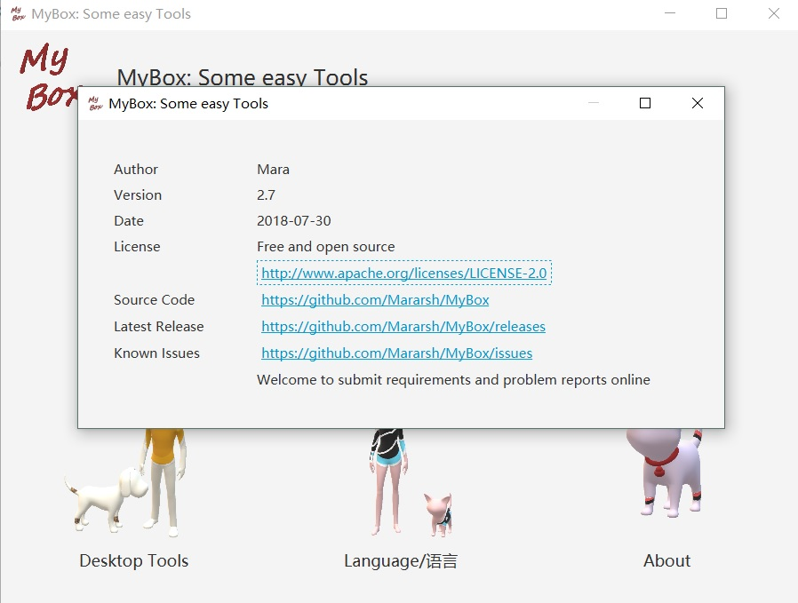
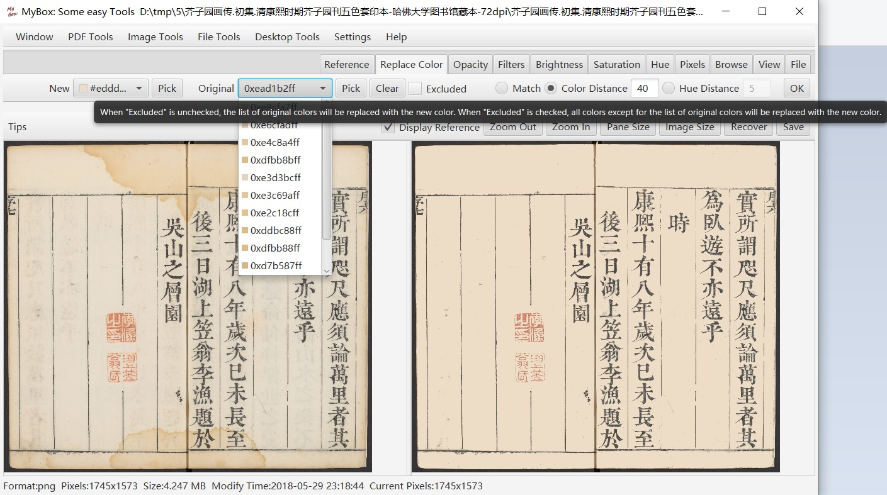

MyBox: Set of Easy Tools
This is GUI program based on JavaFx to provide simple and easy functions. It's free and open sources
Jar packages of each version have been uploaded at Release directory now. You can find them by clicking "releases" tab in main page of this project.
EXE package is avaliable for users who have not java env. It need not installation and users can run the EXE directly after unpack it.
User also can download jar file if JRE or JDK installed, and run following command to launch this program:
java -jar MyBox-VERSION.jarCurrent version is 2.12. It includes the following features:
Development Logs
2018-09-11 v2.12 Combine images as PDF file, Compress images in PDF, combine PDF files, split PDF. Support Chinese written in PDF file, and system font file is locating automatically while user can input ttf file path. Prompt information is shown more smoothly and friendly. In web browser, font size can be zoom in and zoom out, and web page can be snapped into PDF file with settings of delay and PDF page size.
2018-09-06 v2.11 Image combining which supports array options, background color, interval, edges, and size options. Web browser supports synchronized contents with web editor and snapshots of the whole web page in one image. Image maunfacture like shadow, arced corners, adding edges. Implement manufacture of big image and make sure performance is acceptable.
2018-08-11 v2.10 Image Spliting which supports equipartition and custom. Scope of image manufacture is easier to use. No number limition is for multiple image files viewed in same screen now.
2018-08-07 v2.9 Image croping. Scope, including area scope like rectangle and circle and color matching, is supported for image manufacture.
2018-07-31 v2.8 Image edges' cutting. Watermark in image. Undo and redo for image manufacture. Html editor. Text edior.
2018-07-30 v2.7 Image transform, including rotating, mirroring, and shearing.
2018-07-26 v2.6 Improve color replacement: Support original colors' list and hue distance. Support opacity adjustment.
2018-07-25 v2.5 Color palette. And Replace colors in image, by accurate matching of color, or by colors' distance. Color replacement can be used to change the background color of images or eliminate color noise of images.
2018-07-24 v2.4 Improve functions of Image Manufacture and Multiple Images Viewer: Smoothly switching, reference image, and pixels adjustment.
2018-07-18 v2.3 Alarm clocks, with options of time and ring. Support rings of "Meow", wav, and mp3. Can run in background. Thanks my GuaiGuai for her contribution of "Meow".
2018-07-11 v2.2 Fix bug about threads' logic. Files rearragement that categories files under new directories according to their modify time or create time. This function can be used to handle photoes, games screenshots, or system logs which need archived based on time.
2018-07-09 v2.1 Improve interface of image manufacturing and support images borwsering. Directory synchronization, with options like copying subdirectoies, new files, modified files after some time, original file's attributes, or deleting files and directories which are not in source path, etc.
2018-07-06 v2.0 Extract texts from PDF files in batching way. Convert image files to other formats in batching way. Rename files under directories, with options about files' name and sorting. All of or part of renamed files can be recovered as originl names.
2018-07-03 v1.9 Fix issues. Customize page separator line when extract texts from PDF. Improve image manufacture: Adjust saturation, lightness, and hue with parameters and provide filters like gray, invert, or binary.
2018-07-01 v1.8 Extract texts from PDF files. Manufacture image: Adjust saturation, lightness, make it gray, or invert the color.
2018-06-30 v1.7 Improve Pixels Calculator. Support to view multiple images in same screen.
2018-06-27 v1.6 Convert image files to other formats, with options of color, size, compression, quality, etc. Pixels Calculator. Support more image formats: gif, wbmp, pnm, pcx.
2018-06-24 v1.5 Extract images from PDF and save as original format. Support extracting and converting in batching way. Thanks helps from "https://shuge.org/" who asked the requirement of extracting images from PDF.
2018-06-21 v1.4 Support reading/writing meta-data of images in format of png, jpg, bmp, tiff. Thanks helps from "https://shuge.org/" who asked the requirement of Meta-data of images.
2018-06-15 v1.3 Fix the gray calculation in OTSU; Optimize shared codes; Support PDF password; More friendly interface .
2018-06-14 v1.2 Add options of color conversion for binary image type. Save user's choices. And optimize reading of hellp document. Thanks helps from "https://shuge.org/" who asked the requirement of binary conversion of color with threshold.
2018-06-13 v1.1 Add: image format TIFF and RAW, options of Compression Type and Quality, and Help information. Thanks helps from "https://shuge.org/" who asked the requirement of TIFF format
2018-06-12 v1.0 Convert each page of PDF file to an image with options of format, density, color, compression, and quality. And user can pause/continue the conversion.
Snapshots of this program
